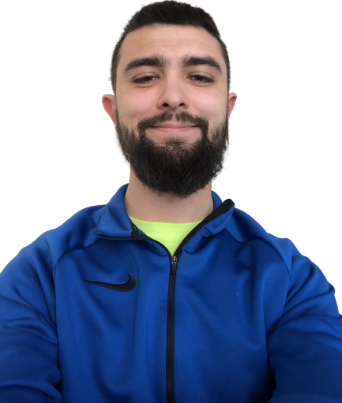

About Me
Education
I graduated from Wright State University in 2020 in the thick of covid with a Bachelor of Science in Computer Science
Professional
I am currently a web developer on a team of 15 at Reynolds and Reynolds and have been for the last 3 years. I have been a part of 7 site launches, responsible for building and maintaining a generic but robust component library used across the React based sites, and responsible for creating tools on the fly to crack down and boost productivity on tedious tasks that were handed to us and the marketing team.
In 2022 I started my own business creating websites for local businesses and organizations and have successfully launched 5 sites, designing on Adobe Illustrator, building with a decoupled React setup using NextJS and Gatsby sourcing content from Sanity, and launching through Netlify.

Personal
In my free time I enjoy getting out and being active. I've been pretty invested in running since high school and even coached in my hometown for a few years while in college. I really enjoy the bonds I have formed over the years while running with friends and students over the years. There is something special about pushing through and sharing pain while trying to achieve personal goals together. I often try to keep a routine of running races throughout the year. I also take a trip down to Gatlinburg with some friends every year to do some hiking as well as some weight lifting at a gym but I am relatively new to that.
I have a companion named Odie, he's an all black pug that is 1 year old. He loves going on rides and running around with other doggos. He is also probably one of the smartest dogs I own which I would of never thought I would be saying that about a pug!
All in all I am always trying to try out new things and live life to the fullest, chances are if you talk to me I have something I am pretty invested and trying to improve at because I'm never able to do anything halfway.